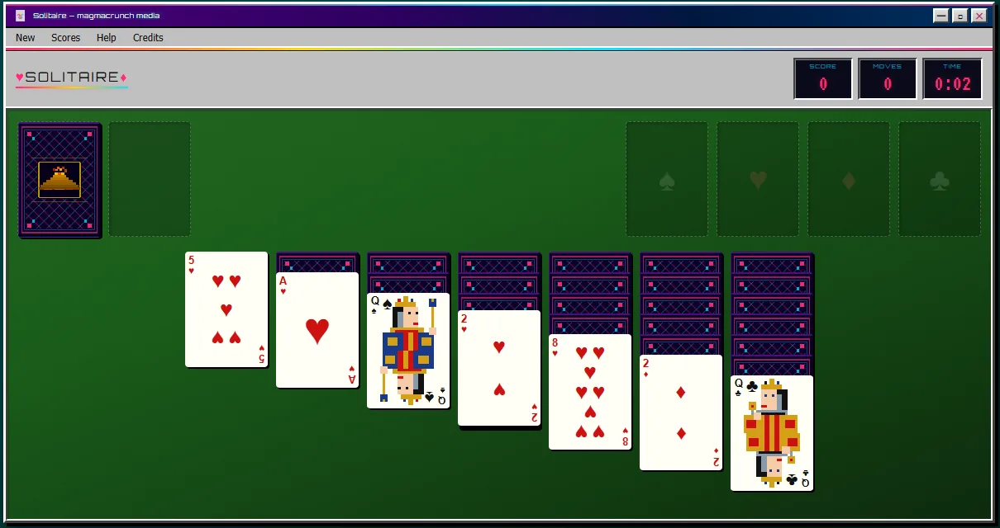
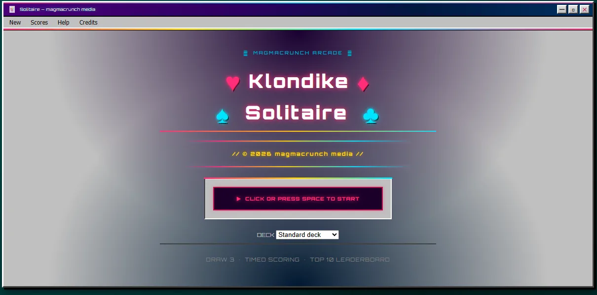

draw 3 · timed scoring · top 10 leaderboard
Klondike, draw three, with timed scoring and a bonus that grows the faster you win.
It looks like vaporwave Miami meets Windows 3.1 shareware: a silver chrome window on a teal desktop, neon pink and cyan on green felt, and a Miami sunset when you win. Pick your deck design and chase the top ten.

game by magmacrunch media
original game Klondike, popular since the late 1800s. Inspired in part by Windows Solitaire (Wes Cherry, 1988; card art by Susan Kare), and not affiliated with Microsoft.